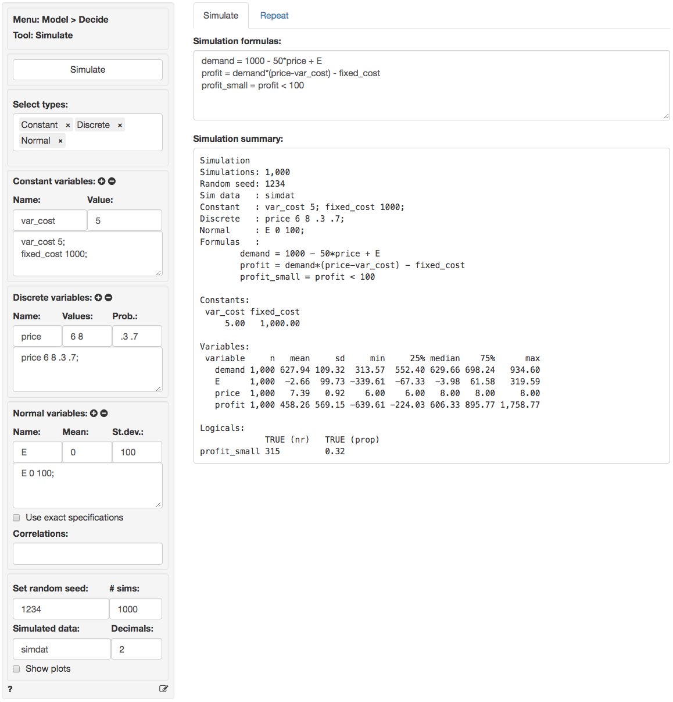
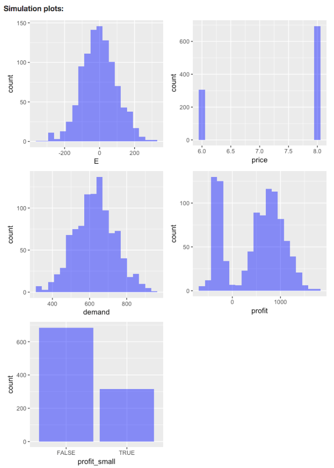
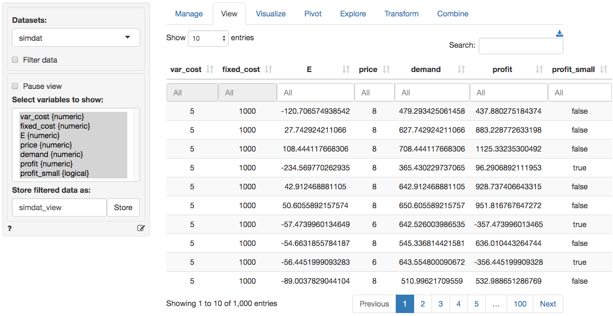
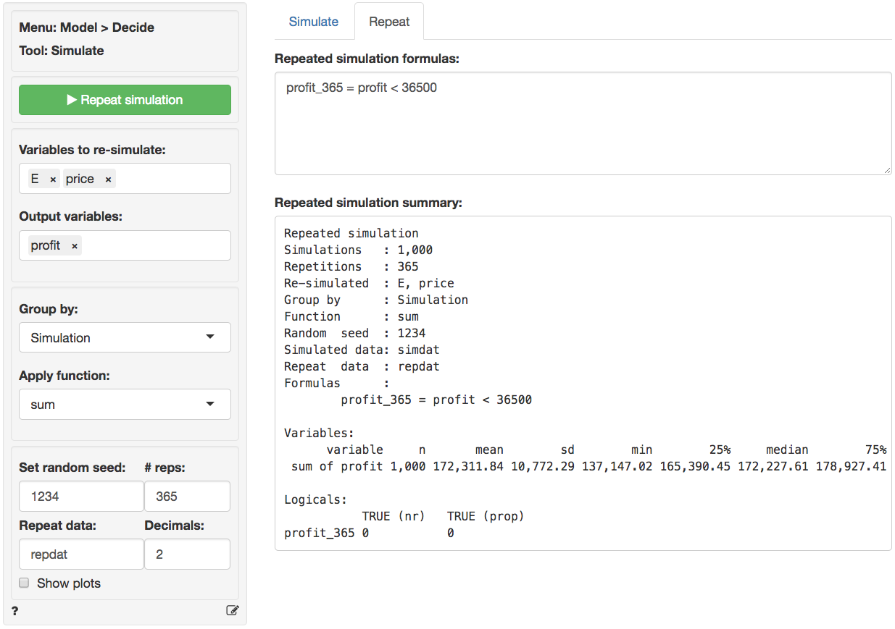
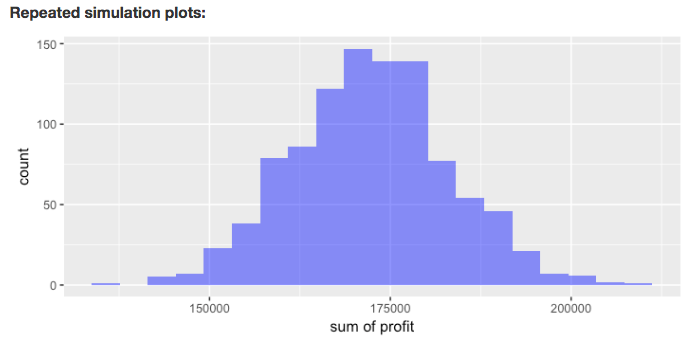

Model > Decide > Simulate
Simulation for decision analysis
Start by selecting the types of variables to use in the simulation
from the Select types dropdown in the Simulate
tab. Available types include Binomial, Constant, Discrete, Log normal,
Normal, Uniform, Data, Grid search, and Sequence.
Binomial
Add random variables with a binomial distribution using the
Binomial variables inputs. Start by specifying a
Name (crash), the number of trials (n) (e.g.,
20) and the probability (p) of a success (.01). Then press
the
icon. Alternatively, enter (or remove) input directly in the text input
area (e.g., crash 20 .01).
Constant
List the constants to include in the analysis in the
Constant variables input. You can either enter names and
values directly into the text area (e.g., cost 3) or enter
a name (cost) and a value (5) in the Name and
Value input respectively and then press the
icon.
Press the
icon
to remove an entry. Note that only variables listed in the (larger)
text-input boxes will be included in the simulation.
Discrete
Define random variables with a discrete distribution using the
Discrete variables inputs. Start by specifying a
Name (price), the values (6 8), and their
associated probabilities (.3 .7). Then press the
icon.
Alternatively, enter (or remove) input directly in the text input area
(e.g., price 6 8 .3 .7). Note that the probabilities must sum to 1. If
not, a message will be displayed and the simulation cannot be run.
Log Normal
To include log normally distributed random variables in the analysis
select Log Normal from the Select types
dropdown and use Log-normal variables inputs. See the
section Normal below for additional information.
Normal
To include normally distributed random variables in the analysis
select Normal from the Select types dropdown
and use Normal variables inputs. For example, enter a
Name (demand), the Mean (1000)
and the standard deviation (St.dev., 100). Then press the
icon.
Alternatively, enter (or remove) input directly in the text input area
(e.g., demand 1000 100).
Poisson
The Poisson distribution is useful to simulate the number of times
and event occurs in a particular time span, such as the number of
patients arriving in an emergency room between 10 and 11pm. To include
Poisson distributed random variables in the analysis select
Poisson from the Select types dropdown and use
Poisson variables inputs. For example, enter a
Name (patients) and a value for the number of
occurrences Lambda the event of interest (20). Then press
the
icon. Alternatively, enter (or remove) input directly in the text input
area (e.g., patients 20).
Uniform
To include uniformly distributed random variables in the analysis
select Uniform from the Select types dropdown.
Provide parameters in the Uniform variables inputs. For
example, enter a Name (cost), the
Min (10) and the Max (15) value. Then press
the
icon. Alternatively, enter (or remove) input directly in the text input
area (e.g., cost 10 15).
Data
To include variables from a separate data-set in the calculations
specified in the Simulation formulas input box, choose a
data-set from the Input data for calculations dropdown.
This can be very useful in combination with the Grid search
feature for portfolio optimization. However, when used in conjunction
with other inputs care must be taken to ensure the number of values
returned by different calculations is the same. Otherwise you will see
an error like:
Error: arguments imply differing number of rows: 999, 3000
Grid search
To include a sequence of values select Grid search from
the Select types dropdown. Provide the minimum and maximum
values as well as the step-size in the Grid search inputs.
For example, enter a Name (price), the
Min (4), Max (10), and Step
(0.01) value. If multiple variables are specified in
Grid search all possible value combinations will be created
and evaluated in the simulation. For example, suppose a first variable
is defined as x 1 3 1 and a second as y 4 5 1
in the Grid search text input then the following data is
generated:
| x | y |
|---|---|
| 1 | 4 |
| 2 | 4 |
| 3 | 4 |
| 1 | 5 |
| 2 | 5 |
| 3 | 5 |
Note that if Grid search has been selected the number of
values generated will override the number of simulations or repetitions
specified in # sims or # reps. If this is not
what you want use Sequence. Then press the
icon.
Alternatively, enter (or remove) input directly in the text input area
(e.g., price 4 10 0.01).
Sequence
To include a sequence of values select Sequence from the
Select types dropdown. Provide the minimum and maximum
values in the Sequence variables inputs. For example, enter
a Name (trend), the Min (1) and
the Max (1000) value. Note that the number of ‘steps’ is
determined by the number of simulations. Then press the
icon.
Alternatively, enter (or remove) input directly in the text input area
(e.g., trend 1 1000).
Formulas
To perform a calculation using the generated variables, create a
formula in the Simulation formulas input box in the main
panel (e.g., profit = demand * (price - cost)). Formulas
are used to add (calculated) variables to the simulation or to update
existing variables. You must specify the name of the new variable to the
left of a = sign. Variable names can contain letters,
numbers, and _ but no other characters or spaces. You can
enter multiple formulas. If, for example, you would also like to
calculate the margin in each simulation press return after
the first formula and type margin = price - cost.
Many of the same functions used with Create in the
Data > Transform tab and in Filter data in
Data > View can also be included in formulas. You can use
> and < signs and combine them. For
example x > 3 & y == 2 would evaluate to
TRUE when the variable x has values larger
than 3 AND y has values equal to 2. Recall
that in R, and most other programming languages, = is used
to assign a value and == to evaluate if the value
of a variable is exactly equal to some other value. In contrast
!= is used to determine if a variable is unequal
to some value. You can also use expressions that have an
OR condition. For example, to determine when
Salary is smaller than $100,000 OR larger
than $20,000 use Salary > 20000 | Salary < 100000.
| is the symbol for OR and
& is the symbol for AND (see also the
help file for Data > View).
A few additional examples of formulas are shown below:
- Create a new variable z that is the difference between variables x and y
z = x - y- Create a new
logicalvariable z that takes on the value TRUE when x > y and FALSE otherwise
z = x > y- Create a new
logicalz that takes on the value TRUE when x is equal to y and FALSE otherwise
z = x == y- The command above is equivalent to the one below using
ifelse. Note the similarity toifstatements in Excel
z = ifelse(x < y, TRUE, FALSE)ifelsestatements can be used to create more complex (numeric) variables as well. In the example below, z will take on the value 0 if x is smaller than 60. If x is larger than 100, z is set equal to 1. Finally, when x is 60, 100, or between 60 and 100, z is set to 2. Note: make sure to include the appropriate number of opening(and closing)brackets!
z = ifelse(x < 60, 0, ifelse(x > 100, 1, 2))- To create a new variable z that is a transformation of variable x but with mean equal to zero:
z = x - mean(x)- To create a new variable z that shows the absolute values of x:
z = abs(x)- To find the value for
pricethat maximizesprofituse thefind_maxcommand. In this examplepricecould be a random orSequence variable. There is also afind_mincommand.
optimal_price = find_max(profit, price)- To determine the minimum (maximum) value for each pair of values
across multiple variables (e.g., x and y) use the functions
pminandpmax. In the example below, z will take on the value of x when x is larger than y and take on the value of y otherwise.
z = pmax(x, y)See the table below for an example:
| x | y | pmax(x,y) |
|---|---|---|
| 1 | 0 | 1 |
| 2 | 3 | 3 |
| 3 | 8 | 8 |
| 4 | 2 | 4 |
| 5 | 10 | 10 |
- Similar to
pminandpmaxa number of functions are available to calculate summary statics across multiple variables. For example,psumcalculates the sum of elements across different vectors. See https://radiant-rstats.github.io/radiant.data/reference/pfun.html for more information.
z = psum(x, y)See the table below for an example:
| x | y | psum(x,y) |
|---|---|---|
| 1 | 0 | 1 |
| 2 | 3 | 5 |
| 3 | 8 | 11 |
| 4 | 2 | 6 |
| 5 | 10 | 15 |
Other commonly used functions are ln for the natural
logarithm (e.g., ln(x)), sqrt for the
square-root of x (e.g., sqrt(x)) and square to
calculate square of a variable (e.g., square(x)).
To return a single value from a calculation use functions such as
min, max, mean, sd,
etc.
- A special function useful for portfolio optimization is
sdw. It takes weights and variables as inputs and returns the standard deviation of the weighted sum of the variables. For example, to calculated the standard deviation for a portfolio of three stocks (e.g., Boeing, GM, and Exxon) you could use the equation below in theSimulation formulasinput.fandgcould be values (e.g., 0.2 and 0.8) or vectors of different weights specified in aGrid searchinput (see above).Boeing,GM, andExxonare names of variables in a data-set included in the simulation using aDatainput (see above).
Pstdev = sdw(f, g, 1-f-g, Boeing, GM, Exxon)For an example of how the simulate tool could be used for portfolio optimization see the state-file available for download here
Functions
It is possible that the standard functions available in R are not
sufficiently flexible to conduct the simulation you have in mind. If
this is the case, click on the Add functions check box on
the bottom left of your screen and can create your own custom function
in the Simulation functions input box in the main panel. To
learn about writing R-functions see
https://www.statmethods.net/management/userfunctions.html
for a good place to start.
For an example of how to use custom R-functions in a gambling simulation, see the state-file available for download here. The report generated through Report > Rmd provides additional information about the simulation setup and the use of functions.
Running the simulation
The value shown in the # sims input determines the
number of simulation draws. To redo a simulation with the same
randomly generated values, specify a number in the
Set random seed input (e.g., 1234).
To save the simulated data for further analysis, specify a name in
the Simulated data input box. You can then investigate the
simulated data by choosing the data with the specified name from the
Datasets dropdown in any of the Data tabs (e.g.,
Data > View, Data > Visualize, or Data >
Explore).
When all required inputs have been specified press the
Simulate button to run the simulation.
In the screen shot below var_cost and
fixed_cost are specified as constants. E is
normally distributed with a mean of 0 and a standard deviation of 100.
price is a discrete random variable that is set to $6 (30%
probability) or $8 (70% probability). There are three formulas in the
Simulation formulas text-input. The first establishes the
dependence of demand on the simulated variable
price. The second formula specifies the profit function.
The final formula is used to determine the number (and proportion) of
cases where profit is below 100. The result is assigned to a new
variable profit_small.

In the output under Simulation summary we first see
details on the specification of the simulation (e.g., the number of
simulations). The section Constants lists the value of
variables that do not vary across simulations. The sections
Random variables and Logicals list the
outcomes of the simulation. We see that average demand in
the simulation is 627.94 with a standard deviation of 109.32. Other
characteristics of the simulated data are also provided (e.g., the
maximum profit is 1758.77). Finally, we see that the probability of
profits below 100 is equal 0.32 (i.e., profits were below
$100 in 315 out of the 1,000 simulations).
To view histograms of the random variables as well as the variables
created using Simulation formulas ensure
Show plots is checked.

Because we specified a name in the Simulated data box
the data are available as simdat within Radiant (see screen
shots below). To use the data in Excel click the download icon on the
top-right of the screen in the Data > View tab or go to the
Data > Manage tab and save the data to a csv file (or use
the clipboard feature). For more information see the help file for the
Data > Manage tab.

Repeating the simulation
Suppose the simulation discussed above was used to get a better
understanding of daily profits. To develop insights into annual profits
we could re-run the simulation 365 times. However, this can be done more
conveniently by using the functionality available in the Repeat
tab. First, select the Variables to re-simulate, here
E and price. Then select the variable(s) of
interest in the Output variables box (e.g.,
profit). Set # reps to 365.
Next, we need to determine how to summarize the data. If we select
Simulation in Group by the data will be
summarized for each draw in the simulation across 365
repeated simulations resulting in 1,000 values. If we select
Repeat in Group by the data will be summarized
for each repetition across 1,000 simulations resulting
in 365 values. If you imagine the full set of repeated simulated data as
a table with 1,000 rows and 365 columns, grouping by
Simulation will create a summary statistic for each row and
grouping by Repeat will create a summary statistic for each
column. In this example we want to determine the sum of
simulated daily profits across 365 repetitions so we select
Simulation in the Group by box and
sum in the Apply function box.
To determine, the probability that annual profits are below $36,500
we enter the formula below into the
Repeated simulation formula text input.
profit_365 = profit_sum < 36500Note that profit_sum is the sum of repeated
simulations of the profit variable defined in the
Simulate tab. When you are done with the input values click the
Repeat button. Because we specified a name for
Repeat data a new data set will be created.
repdat will contain the summarized data grouped per
simulation (i.e., 1,000 rows). To store all 365 x 1,000
simulations/repetitions select none from the
Apply function dropdown.
Descriptive statistics for the repeated simulation are shown in the
main panel under Repeated simulation summary. We see that
the annual expected profit (i.e., the mean of profit_sum)
for the company is 172,311.84 with a standard deviation of 10,772.29.
Although we found above that daily profits can be below $100, the chance
that profits are below \(365 \times
100\) for the entire year are slim to none (i.e., the proportion
of repeated simulations with annual profits below $36,500 is equal to
0).

If Show plots is checked a histogram of annual profits
(profit_sum) is shown under
Repeated simulation plots. There is no plot for
profit_365 because it has only one value (i.e., FALSE).

The state-file for the example in the screenshots above is available for download here
For a simple example of how the simulate tool could be used to find the price that maximizes profits see the state-file available for download here
Using Grid Search in the Repeat tab
Note that the Repeat tab also has the option to use a
Grid search input to repeat a simulation by replacing one
or more Constants specified in the Simulation
tab in an iterative fashion. This input option is shown only when
Group by is set to Repeat. Provide the minimum
and maximum values as well as the step-size in the
Grid search inputs. For example, enter a Name
(price), the Min (4), Max (10),
and Step (0.01) value. If multiple variables are specified
in Grid search all possible value combinations will be
created and evaluated in the simulation. Note that if
Grid search has been selected the number of values
generated will override the number of repetitions specified in
# reps. Then press the
icon.
Alternatively, enter (or remove) input directly in the text area (e.g.,
price 4 10 0.01).
Report > Rmd
Add code to
Report
> Rmd to (re)create the analysis by clicking the
icon on the bottom
left of your screen or by pressing ALT-enter on your
keyboard.
If a plot was created it can be customized using ggplot2
commands or with patchwork. See example below and
Data
> Visualize for details.
plot(result, custom = TRUE) %>%
wrap_plots(plot_list, ncol = 2) + plot_annotation(title = "Simulation plots")R-functions
For an overview of related R-functions used by Radiant to construct and evaluate (repeated) simulation models see Model > Simulate.
Key functions from the stats package used in the
simulater tool are rbinom,
rlnorm, rnorm, rpios, and
runif
Video Tutorials
Copy-and-paste the full command below into the RStudio console (i.e., the bottom-left window) and press return to gain access to all materials used in the simulation module of the Radiant Tutorial Series:
usethis::use_course("https://www.dropbox.com/sh/72kpk88ty4p1uh5/AABWcfhrycLzCuCvI6FRu0zia?dl=1")
Setting Up a Simulation in Radiant (#1)
- This video demonstrates how to use Radiant to set up a simulation
- Topics List:
- Brief introduction to the Poisson distribution
- Specifying a simulation
- Interpretation of the simulation summary
Setting Up a Repeated Simulation in Radiant (#2)
- This video shows how to use Radiant to set up a repeated simulation
- Topics List:
- Specifying a repeated simulation
- Interpretation of the repeated simulation summary
Using simulation to solve probability questions (#3)
- This video demonstrates how to use simulation to solve probability questions in Radiant
- Topics List:
- Review of setting up a (repeated) simulation
- Interpretation of the simulation summary
- Intuition of how repeated simulations work
- This video discusses some helpful functions that are commonly used in simulation formulas
- Topics List:
- Use
ifelseto specify a simulation formula - Use
pmaxto specify a simulation formula
- Use
Using Grid Search in Simulation (#5)
- This video demonstrates how to use grid search in simulation
- Topics List:
- Find an optimal value by sorting simulated data or create a plot
- Find an optimal value by using the
find_maxfunction